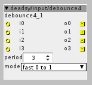
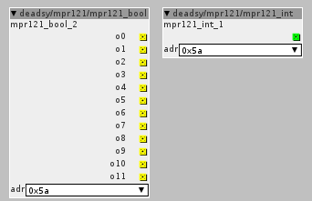

deadsy/input/debounce
Description: A debouncer for boolean inputs.
Version: 1.0.12
debounceN (N=1,2,4,8,16), pick one based on how many lines you need to debounce.

deadsy/mpr121
Description: A driver for MPR121 capacitive touch sensors.
Version: 1.0.12
MPR121 Datasheet
Adafruit Module
Each object supports up to 12 electrodes.
You can have up to 4 devices on a single I2C bus.
Custom configuration can be applied via object local data.
